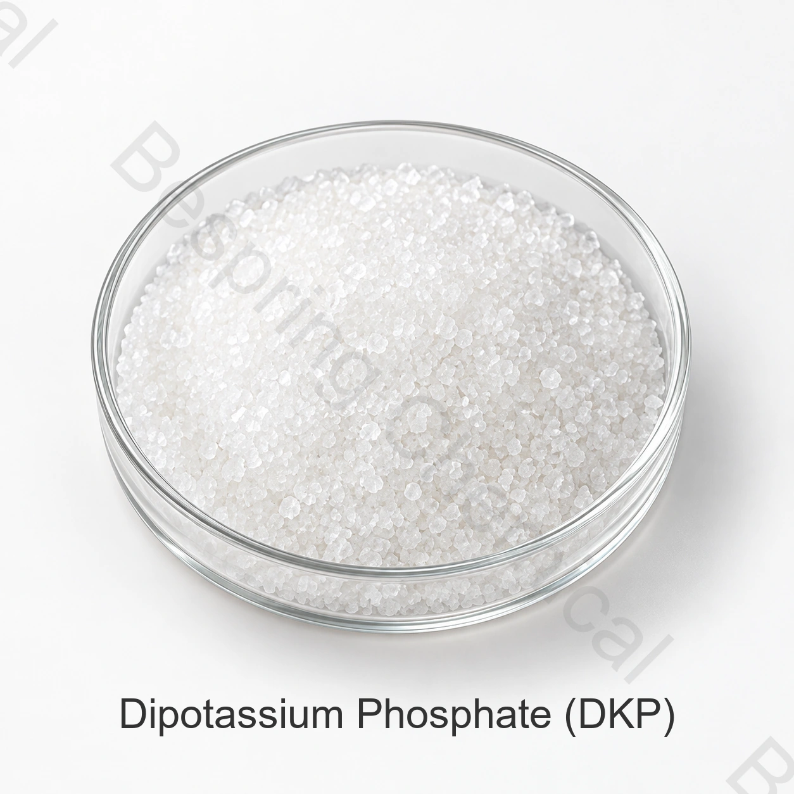

產品身份與等級
說明確切的身份、等級、保證營養分析、形式、用途、數量、包裝和目的地。
肥料級 · 磷酸鹽肥料鹽 · DKP
磷酸氫二鉀是一種水溶性鹼性磷和鉀鹽,適用於具有適當的水合狀態和pH值效應的特種營養配方。
分享保證分析、形式、肥料用途、數量、目的地和檔案。

產品概述
磷酸氫二鉀是一種水溶性鹼性磷和鉀鹽,適用於具有適當的水合狀態和pH值效應的特種營養配方。
DKP 縮寫並不意味著通用肥料等級,僅憑化學品標識並不能確定肥料等級、營養保證、溶解度、作物適用性或市場註冊。比較所提供的來源與所需的標籤和農業程式。
採購核查清單
索樣或下單前，請比較所供等級、應用要求和商業條款。
說明確切的身份、等級、保證營養分析、形式、用途、數量、包裝和目的地。
比較具體貨源的規格、營養宣告、當前COA、包裝、國際貿易術語和交貨視窗。
在相關情況下，確認溶解度、不溶性物質、源水相容性、母液濃度和作物計劃。
請求 SDS, 非公開產品規格或 TDS, 代表 COA, 批次 COA, 追溯性和目的地市場的檔案.
應用評估
這些是資格領域,而不是通用作物建議、營養劑量、標籤批准或保證的農業成果。
在完整配方要求其磷酸鉀成分的情況下,評估DKP。使用當前的營養平衡來源規格。
測試全濃縮液中所需的pH值。包括儲存時間、溫度和其他礦物鹽。
讓農學家定義營養目標和可接受的溶液化學。驗證作物和系統的完整程式。
確認處理和與其他成分的相容性。可溶性原料仍然需要在最終肥料中進行驗證。
技術選型
指定確切的 磷酸氫二鉀 形式和 含量測定.在比較鉀和磷的貢獻之前,確認分析基礎。
請索取所提供品種的P2O5和K2O分析及相關肥料文件。不要僅從配方中得出商業擔保。
在預定濃度下測量溶液pH值和相容性。審查完整的鹽混合物、源水和沉降風險。
確定為什麼配方需要這種鹼性磷酸鹽而不是其他磷源。獲得擬議用途的當地農業和市場資格。
技術檔案
百泉化工不在網上釋出此化肥原料的產品規格。聯絡銷售部門瞭解當前具體貨源的規格或 TDS,並確認其修訂、分析方法和驗收標準。
請求籤署的當前規格或 TDS、SDS、測試方法、代表性 COA 和批次 COA。
確認保證分析、表達基礎、標籤、肥料註冊、微量元素和目的地要求。
評估 糧農組織植物營養指南, 糧農組織化肥規格指南 及 NIH PubChem 化學品記錄。農業適用性和肥料註冊仍然是作物、土壤、配方和管轄區特定的。
農學說明: 此供應商頁面不規定營養劑量或確定作物的適宜性。基礎肥料的選擇和應用,土壤、水和組織資料,合格的農業諮詢,相容性測試,批准的標籤和當地的環境要求。
儲存與操作
化肥買家問題
磷酸氫二鉀是一種水溶性鹼性磷和鉀鹽,適用於具有適當的水合狀態和pH值效應的特種營養配方。應按照土壤或組織測試、作物建議和適用的肥料規則使用。
縮寫 DKP 不意味著通用肥料等級。請求當前具體貨源的保證分析,並確認是否以N、P2O5和K2O或其他法律要求的基礎表示營養物。
百泉化工不在網上釋出化肥產品規格。聯絡銷售部門獲取當前具體貨源的規格或TDS、分析方法和代表性COA。
僅憑化學名稱不確定等級。化肥、食品和技術產品有不同的預期用途、文件、雜質控制和監管要求。
提供確切的身份和形式、所需保證分析、化肥用途、數量、包裝、目的地、登記檔案、國際貿易術語和交貨日期。
內容更新於 2026 年 9 月 13 日。
相關採購資訊
應用與選型指南： 使用 MKP 進行葉面磷鉀補充; 溫室肥料母液罐相容性; 水溶性肥料原料質量。指南用於瞭解工藝問題，具體供貨等級須另行確認。
規格導向型化肥採購
分享保證分析、品級和形式、施肥方法、臨界值、數量、包裝、目的地及檔案清單。